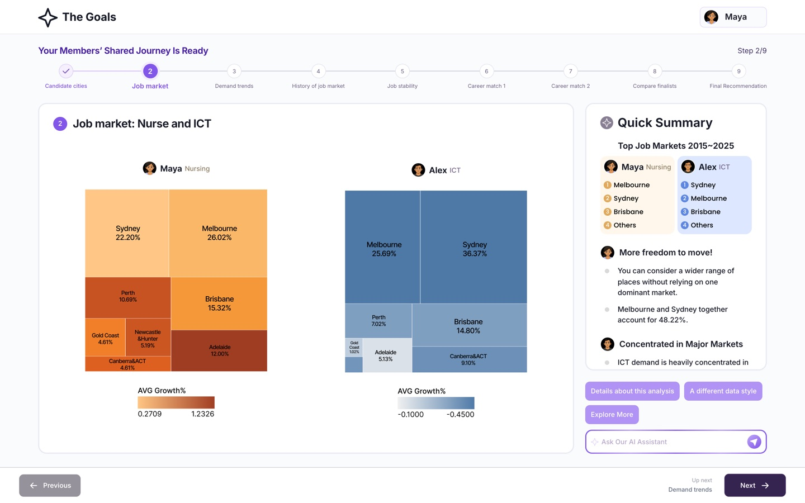
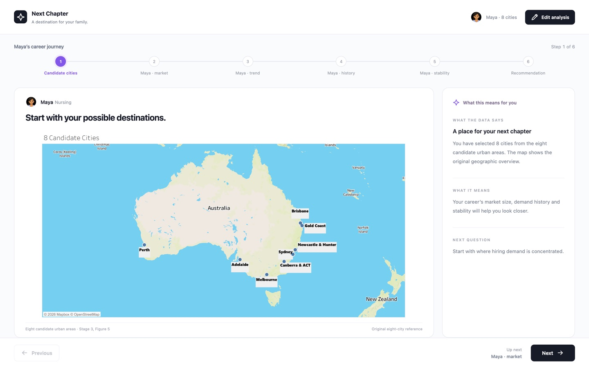
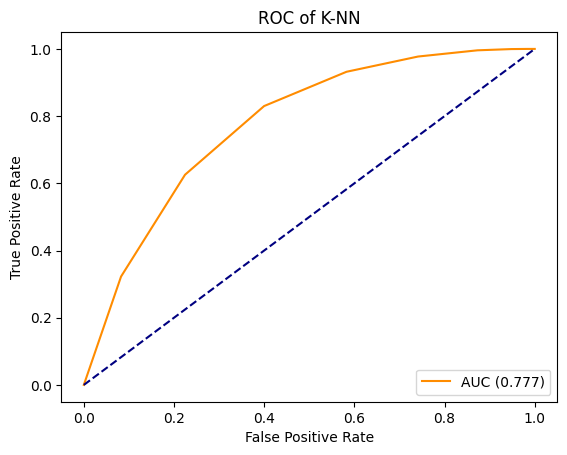

Selected coding work, 2026

Two careers, Nursing and ICT, matched to one shared city.

Career evidence, step by step, to a city recommendation.

K-NN, Decision Tree and MLP compared on loan applicant data.